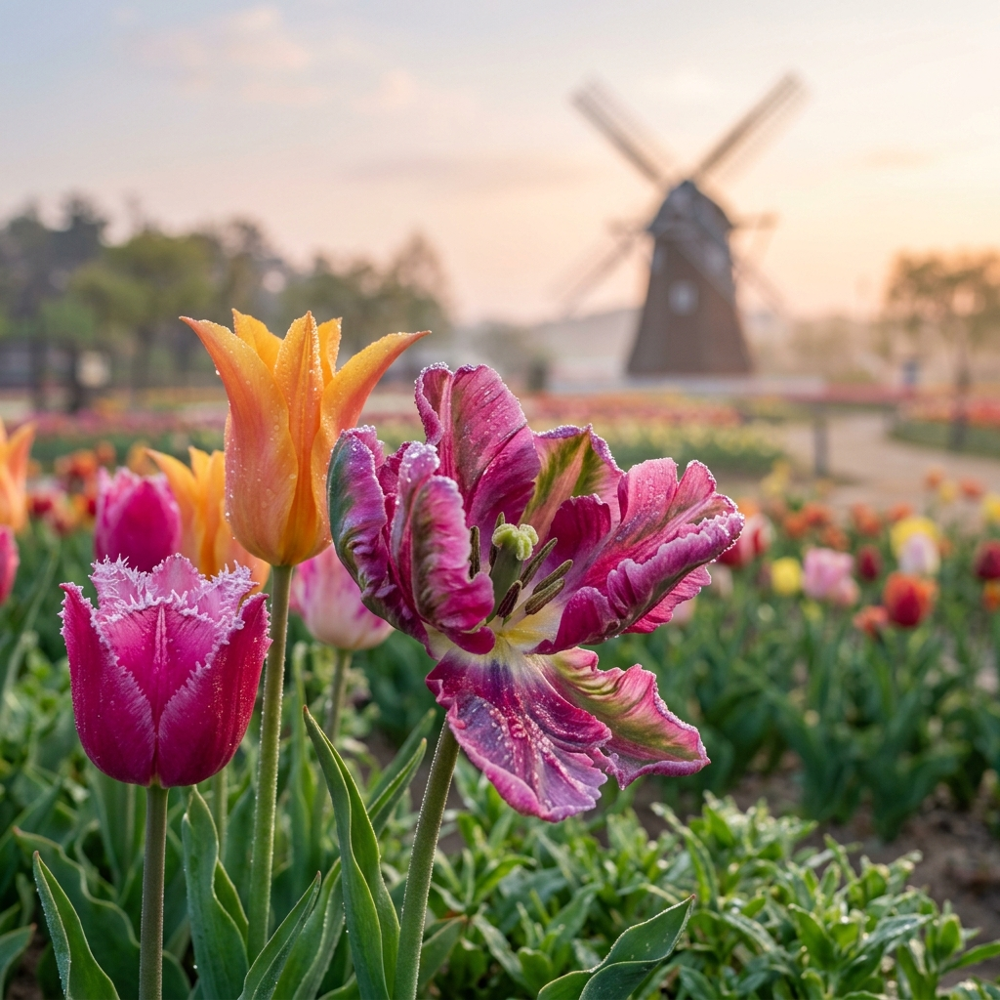

?�녕?�세?? ?�디??기다리고 기다리던 ?�안 ?�계?�립꽃박?�회 ?�즌???�아?�습?�다. 매년 4?�이�?충남 ?�안 ?�면?�는 ?�백�??�이???�립??만들?�내???�려???�의 ?�연?�로 가??찹니?? ?�순??�?축제�??�어 ???�계???�상???�치�??�는 ?�곳?�, ?�해 2026?�에 ?�욱 ?�그?�이?�된 ?�마?� ?�종?�로 방문객들??맞이??준비�? 마쳤?�니??
?�립?� �??�체로도 ?�름?��?�? ?�만 ?�이가 모여 ?�나??거�????�수처럼 ?�쳐�???주는 감동?� 말로 ?�현?�기 ?�렵?�니?? ?�히 ?�해???�른 바다?� 고즈?�한 ?�면?�의 ?�경???�우?�진 ?�안???�립?� ?�직 ?�곳?�서�??�낄 ???�는 ?�국?�이면서???�근??매력??지?�고 ?�죠. ?�늘 ???�스?�에?�는 개막???�둔 박람?�의 ?�시�??�장 ?�식�??�께, 가???�뜰?�고 ?�마?�하�?축제�?즐길 ???�는 비�?�??�들??꼼꼼?�게 ?�리???�리겠습?�다.
?�시�?기상 분석�?과거 개화 ?�이?��? 종합??�??? ?�해???�년보다 ?�조?�이 ?��??�여 개막 초기부???�정?�인 개화 ?�태�?보일 것으�??�상?�니?? ?�히 박람??측에?�는 ?�해 '???�계???�사'?�는 ?�마??맞춰 고전?�인 ?�종부???�덜?�?�에??직접 ?�입??최신 ?��? ?�종까�? ?�자리에???�보???�정?�라�??�니, ?�립 ?�호가?�에게는 ?�칠 ???�는 기회가 ??것입?�다.
?�실 ?�면?�는 ???�성??진출?�로가 ?�정?�어 ?�어 주말 ?�후?�는 주차?�을 빠져?��????�만 1?�간 ?�상 ?�요?�기???�니?? ?�사�?축제??바로 ?�이 ?�닌, 차로 5~10�??�도 ?�어�?백사?�항?�나 방포???�근?�서 ?�결?�시???�선??짜신?�면 ?�씬 ?�유로운 ?�정 ?�화가 가?�합?�다. ?�한, 최근 강화???�주 ?�속�?교통 지?��? 고려?�여 ?�전 ?�전??각별???�의?�시�?바랍?�다.
| ?�토 ?�팟 ?�치 | 추천 ?�유 | 촬영 ?�문가????/th> |
|---|---|---|
| 중앙 메인 광장 '�?카펫' | ?�체 박람?�의 규모감을 ?�눈???�을 ???�음 | ?�망?� ?�크???�라가 부�???High Angle)?�로 촬영 |
| ?�차 �?미니?�처 조형�?�?/td> | ?�화 ???�덜?�?�에 ????�� ?�국???�레??/td> | ?�차 ?�개�??�각선?�로 ?�고 꽃을 ?�경??배치 |
| 꽃�??�수?�장 ?�조?� ?�결??구간 | ?�몰 ??꽃과 바다�??�시???�는 감성 ?�인??/td> | ??��???�용???�립???�루?�과 바다???�슬 강조 |
?�립 ?�진?� 빛의 각도???�라 �?질감???�전???�라집니?? ?�오???�직 광보?�는 ?�출 직후??부?�러??빛이????지�?1?�간 ?�의 '골든 ?�워'�?공략??보세?? 꽃잎??빛을 ?�과?�며 ?�테?�드글?�스처럼 맑고 ?�명?�게 ?�현?�니?? ?�마?�폰 촬영 ?�에??'?�물 ?�진 모드'�??�극 ?�용?�여 배경???�리�?처리(Out-focusing)?�면 �????�이???�아???�태�??�욱 ?�보?�게 ?????�습?�다.

?�히 4?�의 ?�안?� ?�철 주꾸�?/strong>가 가??맛있???�기?�기???�니?? 박람??관?????�근 ?�구?�서 ?�브?�브??볶음?�로 체력??보충?�는 코스??매년 ?�안??찾는 ?�들???�석 코스�? ?�한 ?�간???�유가 ?�신?�면 ?�안 북쪽???�두�??�안?�구??천리???�목?�까지 ?�라?�브�?즐겨보시??것도 ?�안???�채로운 매력??발견?�는 좋�? 방법?�니??
?�안 ?�계?�립꽃박?�회??반려?�물 ?�반??가?�합?�다. ?? 리드�?착용�?배�? 봉투 지참�? ?�수?�며, 꽃밭 ?�으�??�어가???�위???��? 금�??�니?? ?�이?�과 ?�께 ?�신?�면 ?�모�??�???�비?��? 미리 ?�악???�시�? ?�낙 ?��? 부지�?걸어???��?�??�안???�동?��? 착용?�시??것이 즐거??관?�을 ?�한 첫걸?�입?�다. ?�?�을 배려?�는 ?�숙???��? ?�식??축제�??�욱 ?�기�?�� 만듭?�다.
?�면??코리?�플?�워?�크???�간?�도 ?�려??조명�??�께 �?축제�?병행?�는 경우가 많습?�다. ??�� ?�립???�동�??�치???�색???�름?��??�라�? 밤의 ?�립?� ?�비로운 조명 ?�래 몽환?�인 분위기�? ?�아?�니?? ?�히 ?�??조형�??�로 ?�사?�는 미디???�사???�는 ??? ?�간까�? 축제?�을 지?�는 방문객들?�게 ?�사?�는 ?�별???�물과도 같습?�다. 가벼운 ?�투�?챙겨 밤의 ??��까�? �??�려보시�?바랍?�다.
?�면?�의 척박???�을 ?�구???�계가 주목?�는 꽃의 고장?�로 만든 ?�안 주�??�의 ?�력?� 매년 4???�려???�립?�로 ?�어?�니?? 2026???�해, ?�안 ?�계?�립꽃박?�회???�순??구경거리�??�어 ?�사?�는 ?�로?� 기쁨??공간????것입?�다. ?�심??바쁜 ?�상?�서 ?�시 벗어?? ?�억 ?�이???�립???�하??강렬???�명?�을 직접 경험??보세?? ?�러분의 4?�이 ?�립처럼 ?�사?�고 ?�겁�??�?�르�??�원?�니??